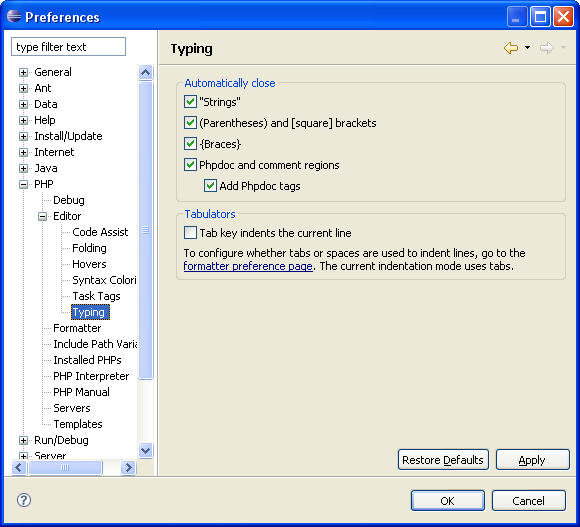

Configuring Typing Preferences
The Typing Preferences settings determine which code and language patterns
the PDT will automatically complete for you.
The PDT will automatically complete the following types of patterns
(if set):
- 'Quotes'
- Automatically
inserts a pair of single
quotes.
- "Quotes"
- Automatically inserts a pair
of double
quotes.
- `Apostrophe`
- Automatically inserts a pair
of apostrophes.
- (Parentheses)
and [Square] brackets - Automatically
inserts a pair of brackets.
For the following patterns, enter the opening pattern and click Enter; the PDT will automatically
complete the pattern.
- {Braces}
- Automatically inserts a pair
of curly brackets
- PHPDoc block
- Auto Completes
- PHPDoc block stub
- Generates
To configure Typing Preferences
- Click Window | Preferences
| PHP | Editor | Typing. The Typing Preferences dialog will open.

Figure 1 - Configuring Typing Preferences
- Check / Uncheck the options required.
Note: All
checked options will be completed,
automatically, by the PDT.
- Click Apply
to apply the selection; click OK
to exit.
Example
Auto Complete PHPDoc block
- Open the Editor; type
the "/**" opening block, press
Enter. The opening block will
be completed with the closing
block statement. The result is:
/**
*
*/
Generate PHPDoc block stub" option.
Open the Editor; type the PHP code shown below.
Type the "/**" opening block above the code and press
Enter.
/**
function a($a,$b){return $c;
The result is as follows:
/**
* Enter
description here
*
* @param unknown_type $a
* @param unknown_type $b
* @return unknown
*/
function a($a,$b){return $c; }